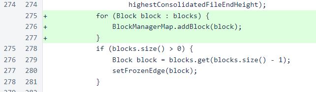
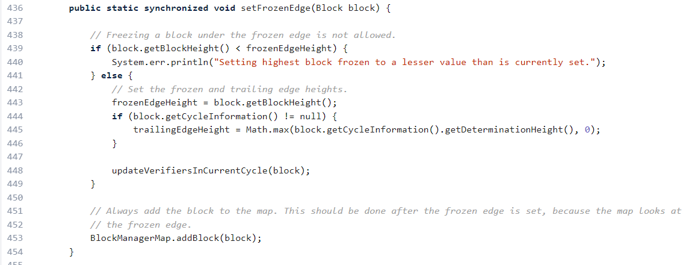
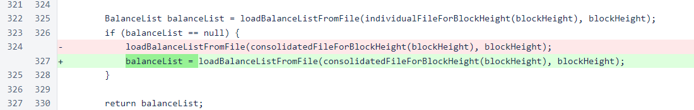

Nyzo version 474 (commit on GitHub) corrects two issues that were causing the verifier initialization process to be unnecessarily slow.
On the official Nyzo verifiers, all AWS t3.micro instances, the time between restarting the verifier process and the verifier responding reliably to messages had climbed to over 3 minutes. Some users also reported failures when restarting their verifiers.
The first correction is a simple addition of some blocks loaded from a consolidated file into the BlockManagerMap. Such manual additions to the map should be done with care, especially after initialization, due to potential side effects. In this case, though, the manual addition was necessary due to the proceeding setFrozenEdge(block) method invocation.
To understand why this is necessary, we must look at the setFrozenEdge() method implementation. In this method, the cycle information is used (block.getCycleInformation().getDeterminationHeight()). To create the cycle information object, the code steps back several cycles into the blockchain, one block at a time. So, instead of using the blocks that we had just loaded from the consolidated file, the code was reading one block at a time, often from a consolidated file containing 1000 blocks, for several cycles.
The other issue is more obvious. In the loadBalanceListFromFileForHeight() method, balance lists from consolidated files were loaded but not assigned to the balanceList variable. This resulted in many unnecessary file reads and additional work to derive the balance list from an earlier list.
